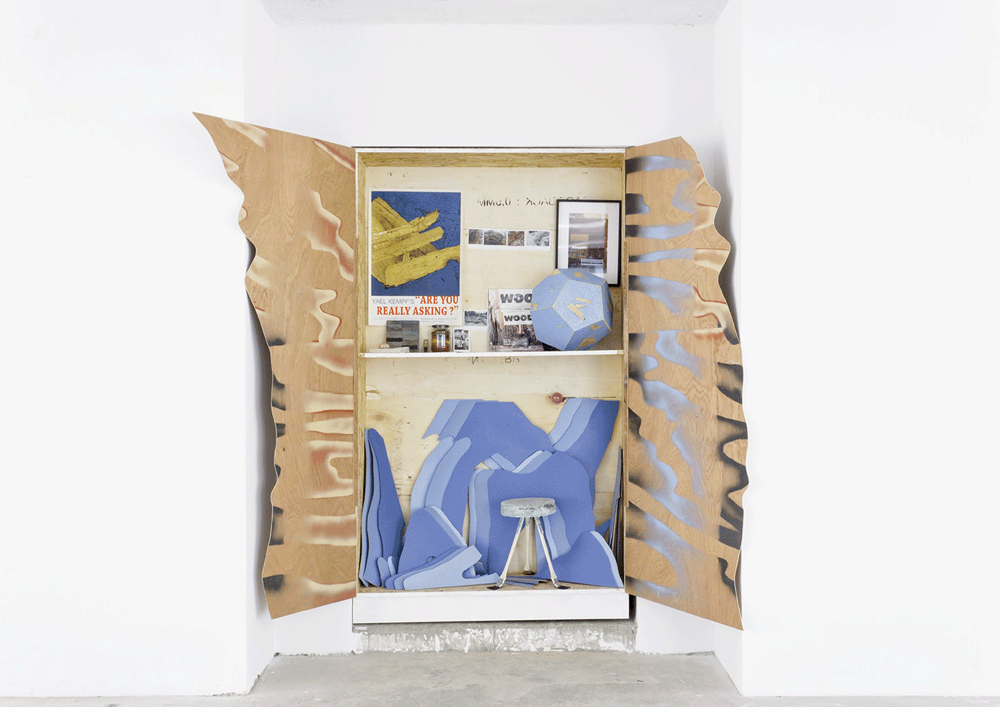
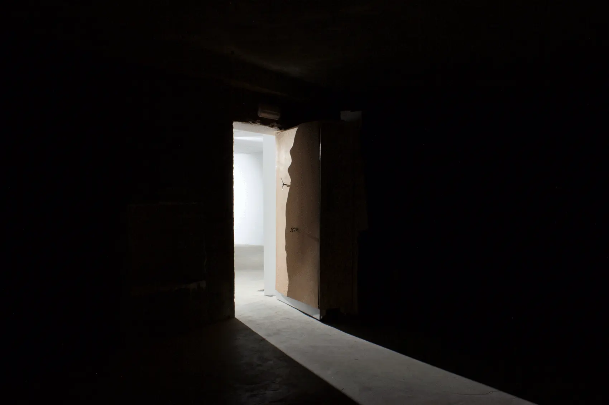
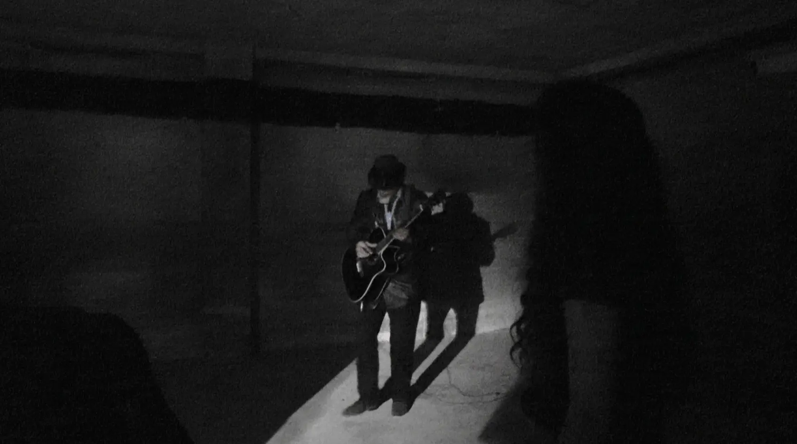

The City is empty.
Late at night walking between.
Louise and Stephanie.
I found Nelu and said.
Thank you.
One week later,
We can communicate,
Thank Googlyou.
Couple of weeks later,
You came, with visitors.
What an Honor.
In a former Bank.
There was my cupboard.
Full of meanless objects.
There was this cupboard,
Hiding this secret way
To the former safe,
in a random and mechanical way
to.
Enlightened by the light coming
from the outside,
You.
Nelu Chitaristu,
improvises for others
Like the hum of the sea
Wrapping them in the folds of his music.
Until the doors shut.
Brussels, 2016.
